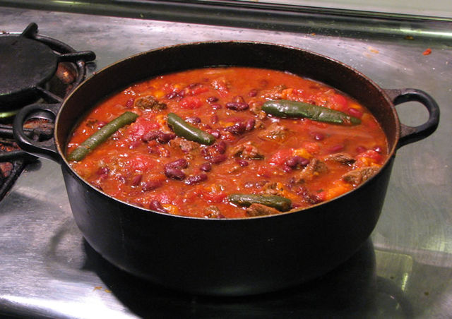

Chilli con carne

This is a rather simple and easy chilli con carne recipe.
It's a perfect dish to serve at casual get-togethers or other gatherings.
Ingredients:
- Minced beef 500g
- Can of chopped tomatoes 1
- Tomato puree
- Can of red kidney beans
- Red bell pepper 1
- Large onion 1
- Beef stock cube 1
- Spices to taste:
- Paprika
- Chilli flakes
- Ground cumin
- Coriander leaves
optional:
Steps:
- Heat a bit of oil in a large pot. Fry the onions and garlic until they are soft.
- Add the minced beef into the pot and fry it untill it's brow. Make sure to break up any chunks of meat with a spoon.
- Add the can of tomatoes, tomato puree, the spices as well as the stock cube
- Bring the whole pot to simmer, cover with a lid and let it cook over a gentle heat.
- Add the kidney beans and bell pepper. Cook for additional 10min
- Serve with rice, pasta or just by itself